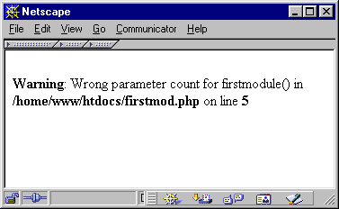

| ||||||
|
| ||||||
Глава 33. Приём аргументов
- Содержание
- Определение количества аргументов
- Запрос аргументов
- Старый способ запроса аргументов (не рекомендуется)
- Работа с переменным количеством аргументов/параметров-опций
- Доступ к аргументам
- Работа с аргументами, передаваемыми по ссылке
Одним из важнейших вопросов для расширений языка является приём и обработка данных, переданных через аргументы. Большинство расширений сконструированы для работы со специфическими данными ввода (или требуют параметров для выполнения своих специфичных акций), и аргументы функций это единственный реальный способ обмена данными между уровнем PHP и уровнем C. Разумеется, имеется также возможность обмена данными с использованием предопределённых глобальных значений (также обсуждаются позднее), но это по всем показаниям должно быть исключено как совершенно недопустимая практика. Детали см. в Главе 1, "Концепции разработки".
PHP не использует формальное определение функции, поскольку синтаксис вызова всегда динамический и никогда не проверяется на наличие ошибок. Проверку корректности синтаксиса выполняет пользовательский код. Например, можно вызвать функцию с использованием только одного аргумента в первый раз и 4 аргументов - в следующий раз, оба вызова синтаксически являются абсолютно корректными.
Определение количества аргументов
Поскольку в PHP отсутствует формальное определение функции с поддержкой проверки синтаксиса вызова и поскольку возможно переменное количество аргументов, иногда необходимо определять, с каким количеством аргументов функция была вызвана. Вы можете использовать для этого макрос ZEND_NUM_ARGS. В предыдущих версиях PHP этот макрос запрашивал количество аргументов, с которым функция была вызвана, базируясь на вхождении функции в таблице хэшей, ht, которая передавалась в список INTERNAL_FUNCTION_PARAMETERS. Поскольку сама ht теперь содержит количество аргументов, переданных функции, ZEND_NUM_ARGS укорочен до шаблонного макроса (см. его определение в zend_API.h). Но его использование всё ещё является нормальной практикой, чтобы сохранить совместимость с будущими изменениями в интерфейсе вызова.
- Примечание: старый эквивалент PHP этого макроса - ARG_COUNT.
Следующий код проверяет корректность количества аргументов:
if(ZEND_NUM_ARGS() != 2)
WRONG_PARAM_COUNT; |
Если эта функция не вызывается с двумя аргументами, выполняется выход с сообщением об ошибке. В это коде применена макро-утилита WRONG_PARAM_COUNT, которая может использоваться для генерации стандартного сообщения об ошибке (см. Рисунок 9.4).
Рисунок 33-1. Рисунок 9.4. WRONG_PARAM_COUNT в действии.

Этот макрос печатает сообщение по умолчанию об ошибке, а затем возвращает управление вызывателю. Его определение также можно найти в файле zend_API.h, и выглядит оно так:
ZEND_API void wrong_param_count(void);
#define WRONG_PARAM_COUNT { wrong_param_count(); return; } |
Как вы видите, он вызывает внутреннюю функцию wrong_param_count(), которая отвечает за вывод предупреждения. О генерации специализированных сообщений см. далее раздел "Печать информации".
|
| ||||||
|